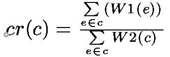

template <typename Graph, typename VertexIndexMap,
typename EdgeWeight1, typename EdgeWeight2>
dobule
maximum_cycle_ratio(const Graph &g, VertexIndexMap vim,
EdgeWeight1 ewm, EdgeWeight2 ew2m,
std::vector<typename boost::graph_traits<Graph>::edge_descriptor> *pcc = 0);
template <typename FloatTraits, Graph, typename VertexIndexMap,
typename EdgeWeight1, typename EdgeWeight2>
typename FloatTraits::float_type
maximum_cycle_ratio(const Graph &g, VertexIndexMap vim,
EdgeWeight1 ewm, EdgeWeight2 ew2m,
std::vector<typename boost::graph_traits<Graph>::edge_descriptor> *pcc = 0,
FloatTraits = FloatTraits());
template <typename Graph, typename VertexIndexMap,
typename EdgeWeight1, typename EdgeWeight2>
dobule
minimum_cycle_ratio(const Graph &g, VertexIndexMap vim,
EdgeWeight1 ewm, EdgeWeight2 ew2m,
std::vector<typename boost::graph_traits<Graph>::edge_descriptor> *pcc = 0);
template <typename FloatTraits, typename Graph, typename VertexIndexMap,
typename EdgeWeight1, typename EdgeWeight2>
typename FloatTraits::float_type
minimum_cycle_ratio(const Graph &g, VertexIndexMap vim,
EdgeWeight1 ewm, EdgeWeight2 ew2m,
std::vector<typename boost::graph_traits<Graph>::edge_descriptor> *pcc = 0,
FloatTraits = FloatTraits());
The maximum_cycle_ratio() function calculates the maximum cycle ratio of a
weighted directed multigraph G=(V,E,W1,W2), where V is a vertex set,
E is an edge set, W1 and W2 are edge weight functions, W2 is nonnegative.
As a multigraph, G can have multiple edges connecting a pair of vertices.
Let every edge e has two weights W1(e) and W2(e). Let c be a cycle of the graphg. Then, the cycle ratio, cr(c), is defined as:

The maximum (minimum) cycle ratio (mcr) is the maximum (minimum) cycle ratio of all cycles of the graph. A cycle is called critical if its ratio is equal to the mcr. The calculated maximum cycle ratio will be the return value of the function. The maximum_cycle_ratio()/minimum_cycle_ratio() returns -FloatTraits::infinity()/FloatTraits::infinity() if graph has no cycles. If the pcc parameter is not zero then one critical cycle will be written to the corresponding std::vector of edge descriptors. The edges in the vector stored in the way such that *pcc[0], *ppc[1], ..., *ppc[n] is a correct path.The algorithm is due to Howard's iteration policy algorithm, descibed in [1]. Ali Dasdan, Sandy S. Irani and Rajesh K.Gupta in their paper Efficient Algorithms for Optimum Cycle Mean and Optimum Cost to Time Ratio Problemsstate that this is the most efficient algorithm to the time being (1999).
For the convenience, functions maximum_cycle_mean() and minimum_cycle_mean() are also provided. They have the following signatures:
template <typename Graph, typename VertexIndexMap,
typename EdgeWeightMap, typename EdgeIndexMap>
double
maximum_cycle_mean(const Graph &g, VertexIndexMap vim,
EdgeWeightMap ewm, EdgeIndexMap eim,
std::vector<typename graph_traits<Graph>::edge_descriptor> *pcc = 0);
template <typename FloatTraits, typename Graph, typename VertexIndexMap,
typename EdgeWeightMap, typename EdgeIndexMap>
typename FloatTraits::float_type
maximum_cycle_mean(const Graph &g, VertexIndexMap vim,
EdgeWeightMap ewm, EdgeIndexMap eim,
std::vector<typename graph_traits<Graph>::edge_descriptor> *pcc = 0,
FloatTraits = FloatTraits());
template <typename Graph, typename VertexIndexMap,
typename EdgeWeightMap, typename EdgeIndexMap>
double
minimum_cycle_mean(const Graph &g, VertexIndexMap vim,
EdgeWeightMap ewm, EdgeIndexMap eim,
std::vector<typename graph_traits<Graph>::edge_descriptor> *pcc = 0);
template <typename FloatTraits, typename Graph, typename VertexIndexMap,
typename EdgeWeightMap, typename EdgeIndexMap>
typename FloatTraits::float_type
minimum_cycle_mean(const Graph &g, VertexIndexMap vim,
EdgeWeightMap ewm, EdgeIndexMap eim,
std::vector<typename graph_traits<Graph>::edge_descriptor> *pcc = 0,
FloatTraits = FloatTraits());
boost/graph/howard_cycle_ratio.hpp
IN: FloatTraits
The FloatTrats encapsulates customizable limits-like information for floating point types. This type must provide an associated type, value_type for the floating point type. The default value is boost::mcr_float<>which has the following definition:
template <typename Float = double> struct mcr_float { typedef Float value_type; static Float infinity() { return (std::numeric_limits<value_type>::max)(); } static Float epsilon() { return Float(-0.005); } };The value FloatTraits::epsilon() controls the "tolerance" of the algorithm. By increasing the absolute value of epsilon you may slightly decrease the execution time but there is a risk to skip a global optima. By decreasing the absolute value you may fall to the infinite loop. The best option is to leave this parameter unchanged.
IN: const Graph& g
A weighted directed multigraph. The graph's type must be a model of VertexListGraph and IncidenceGraph
IN: VertexIndexMap vim
Maps each vertex of the graph to a unique integer in the range [0, num_vertices(g)).
IN: EdgeWeight1 ew1m
The W1 edge weight function.
IN: EdgeWeight2 ew2m
The W2 edge weight function. Should be nonnegative. The actual limitation of the algorithm is the positivity of the total weight of each directed cycle of the graph.
OUT: std::vector<typename boost::graph_traits<Graph>::edge_descriptor>* pcc
If non zero then one critical cycle will be stored in the std::vector. Default value is 0.
IN (only for maximum/minimal_cycle_mean()): EdgeIndexMap eim
Maps each edge of the graph to a unique integer in the range [0, num_edges(g)).
All property maps must be models of Readable Property Map
There is no known precise upper bound for the time complexity of the algorithm. Imperical time complexity is O(|E|), where the constant tends to be pretty small (about 20-30). Space complexity is equal to 7*|V| plus the space required to store a graph.
The program in libs/graph/example/cycle_ratio_example.cpp generates a random graph and computes its maximum cycle ratio.
|
Copyright © 2006-2009 |
Dmitry Bufistov, Andrey Parfenov |